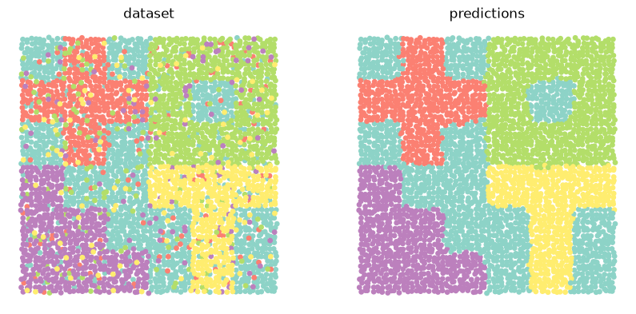
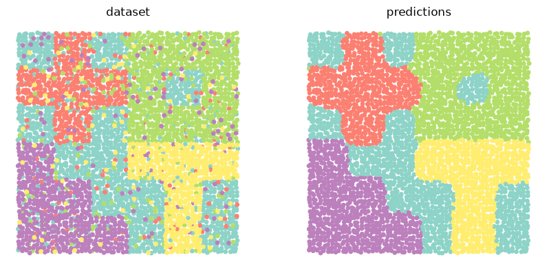
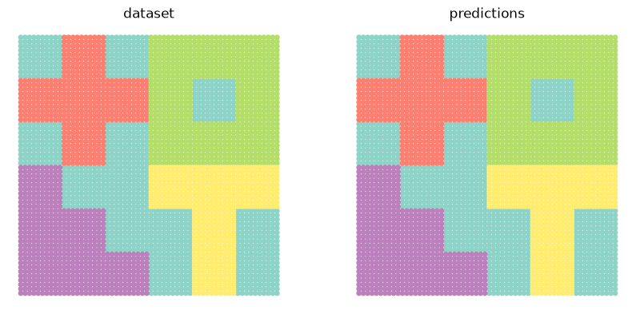

Examples#
ATLAS#
from asterism import ATLAS
from asterism.utils.data import make_dataset
from asterism.utils.plots import show_comparison
data, locs, labels = make_dataset(wiggle=.2, mix=.2, return_tensor=True, seed=0)
topics = ATLAS(seed=0).fit_predict(data, locs, labels)
show_comparison(locs, labels, topics)
{kind=link}

GibbsLDA#
from asterism import GibbsLDA
from asterism.utils.data import make_dataset
from asterism.utils.plots import show_comparison
data, locs, labels = make_dataset(seed=4)
topics = GibbsLDA(5, seed=4).fit_predict(data, labels)
show_comparison(locs, labels, topics)

PyroLDA#
from asterism import PyroLDA
from asterism.utils.data import make_dataset
from asterism.utils.plots import show_comparison
data, locs, labels = make_dataset(return_tensor=True, seed=3)
topics = PyroLDA(5, seed=3).fit_predict(data, labels)
show_comparison(locs, labels, topics)

GibbsSLDA#
from asterism import GibbsSLDA
from asterism.utils.data import make_dataset
from asterism.utils.plots import show_comparison
data, locs, labels = make_dataset(wiggle=.2, mix=.2, seed=1)
topics = GibbsSLDA(5, seed=1).fit_predict(data, locs, labels)
show_comparison(locs, labels, topics)
{kind=link}

NTM#
from asterism import NTM
from asterism.utils.data import make_dataset
from asterism.utils.plots import show_comparison
data, locs, labels = make_dataset(return_tensor=True, seed=1)
topics = NTM(5, seed=1).fit_predict(data, labels)
show_comparison(locs, labels, topics)
from asterism import NTM
from asterism.utils.data import make_dataset
from asterism.utils.plots import show_comparison
data, locs, labels = make_dataset(return_tensor=True, seed=0)
topics = NTM(5, mode='dirichlet', seed=0).fit_predict(data, labels)
show_comparison(locs, labels, topics)
{kind=link}

RSB#
from asterism import RSB
from asterism.utils.data import make_dataset
from asterism.utils.plots import show_comparison
data, locs, labels = make_dataset(return_tensor=True, seed=2)
topics = RSB(seed=2).fit_predict(data, labels)
show_comparison(locs, labels, topics)

VQAE#
from asterism import VQAE
from asterism.utils.data import make_dataset
from asterism.utils.plots import show_comparison
data, locs, labels = make_dataset(return_tensor=True, seed=1)
topics = VQAE(5, seed=1).fit_predict(data, labels)
show_comparison(locs, labels, topics)
NCP#
from asterism import NCP
from asterism.utils import batch_split
from asterism.utils.data import make_dataset
from asterism.utils.plots import show_comparison
data, locs, labels = make_dataset(('polygons',)*5, return_tensor=True, seed=1)
data_train, labels_train, data_test, labels_test = batch_split(data, labels, locs)
locs_test = locs[-data_test.shape[1]:]
topics = NCP(seed=1).fit(data_train, labels_train)(data_test)
show_comparison(locs_test, labels_test, topics, title1='datasets (x4)')